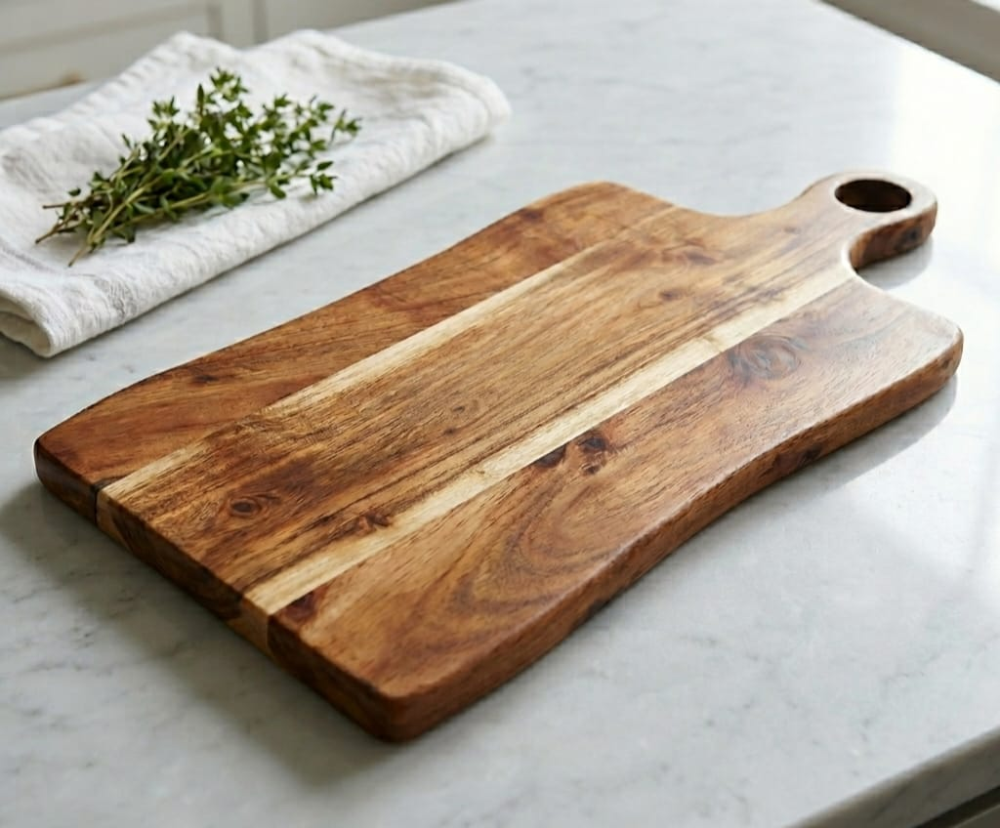
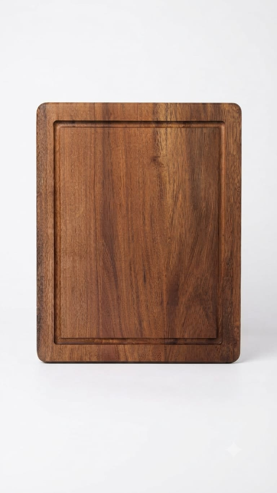
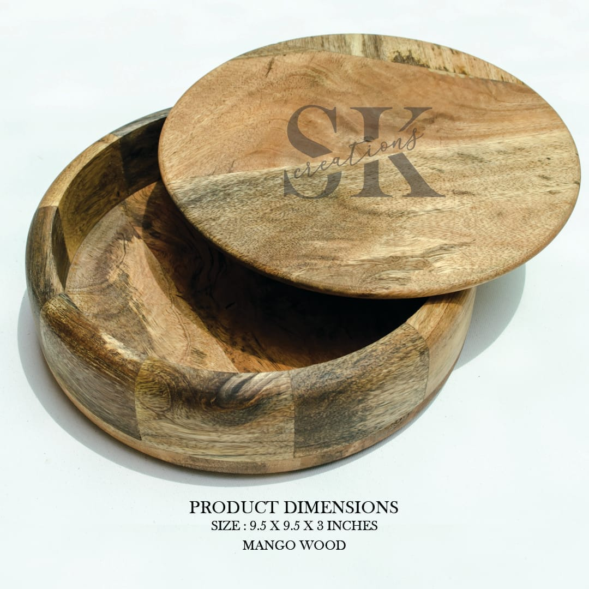
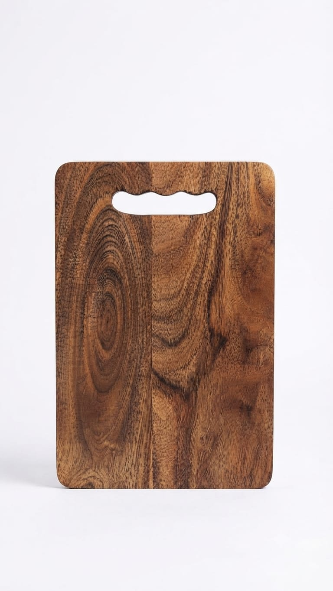
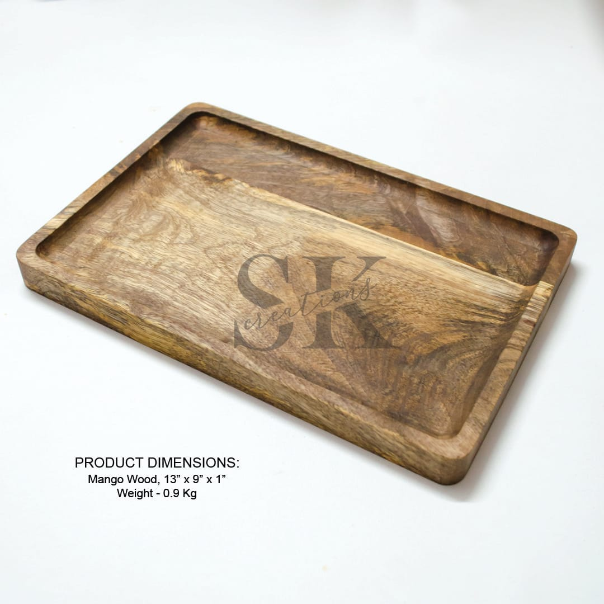
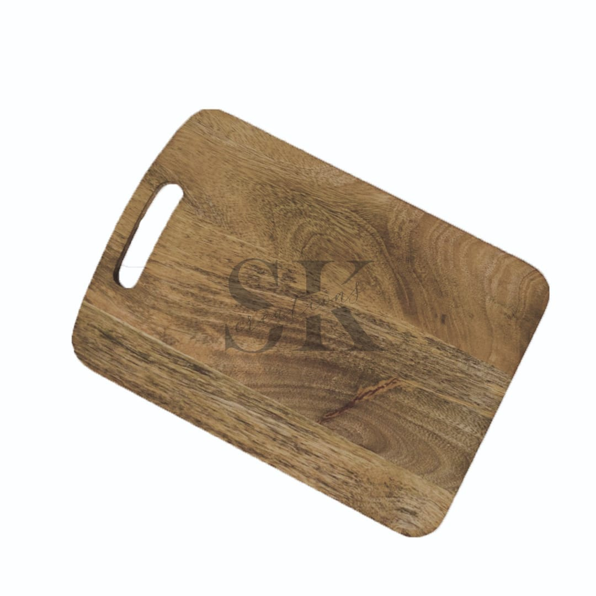
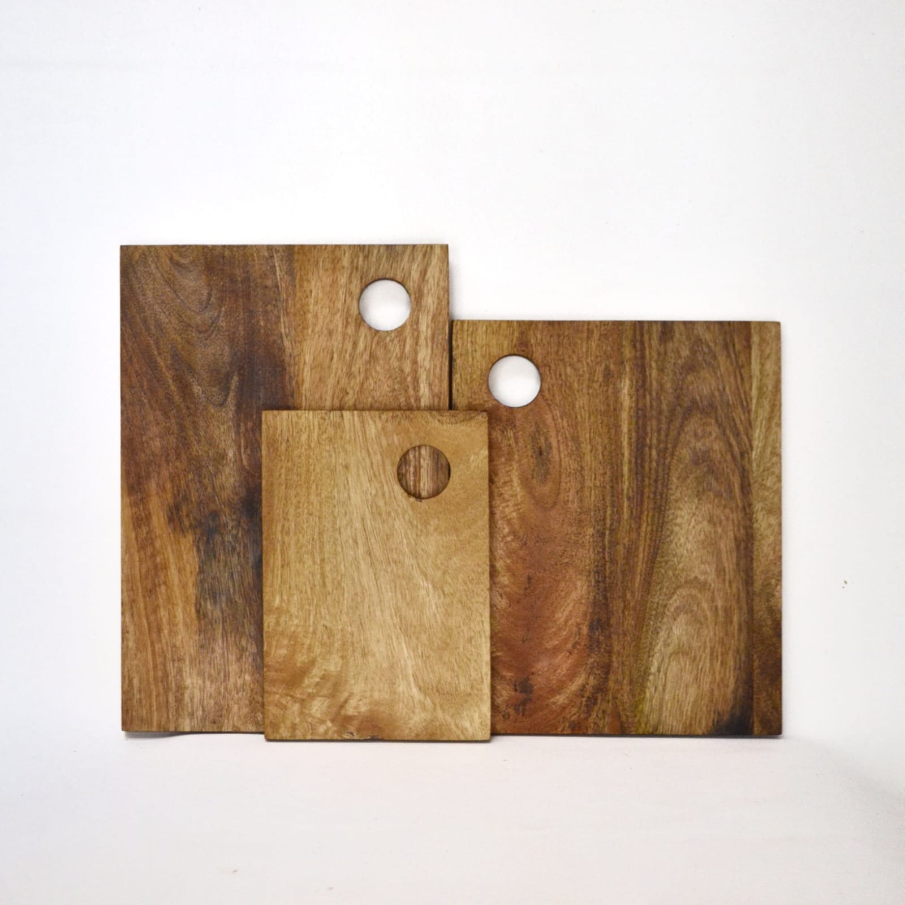
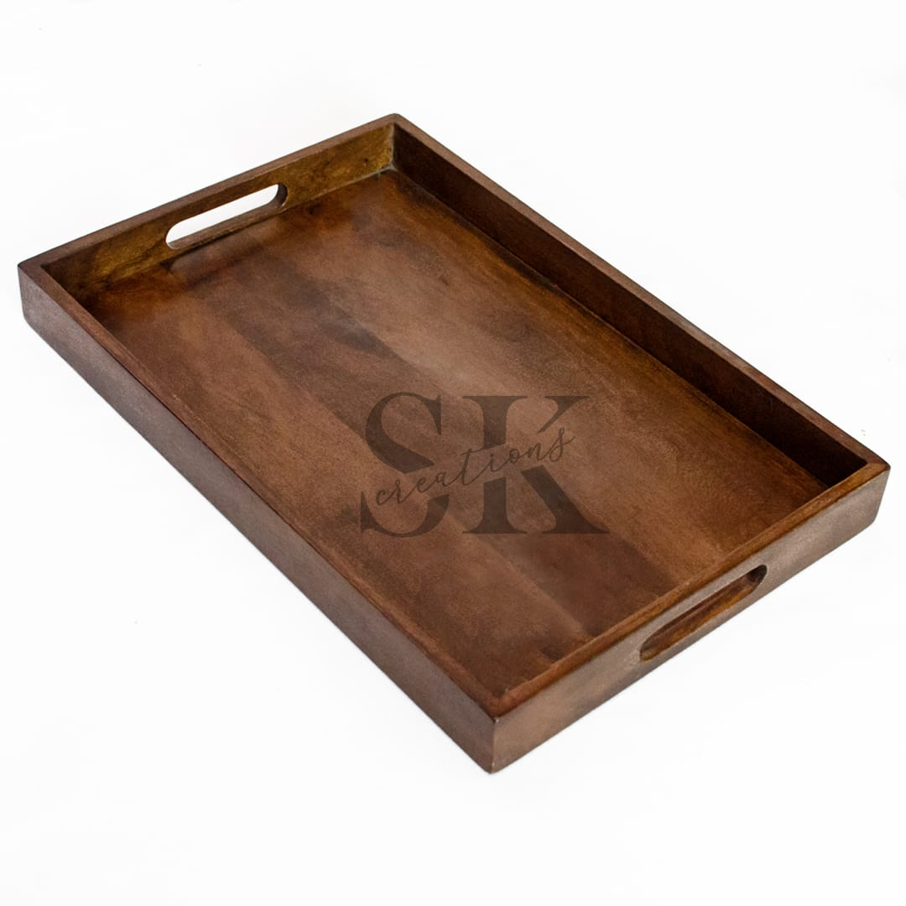

HANDCRAFTED IN JODHPUR
Wood, shaped into something timeless.
Thoughtfully handcrafted wooden utility and décor pieces that bring natural warmth, character and craftsmanship to your home.

S.K. CREATIONS
Crafted by hand. Made for everyday beauty.
Traditional woodworking meets contemporary design in functional pieces created to be used, admired and enjoyed.
OUR COLLECTION
Natural materials. Distinctive forms.
Every piece celebrates the grain and character of wood. Contact us for current designs, sizes and prices.




Wooden Dinner Sets
Coordinated handcrafted pieces for a warm table setting.
Contact for PriceEnquire →
SIGNATURE PIECES
Made to stand out
Ask us about available patterns, sizes and handcrafted designs.
Ask on WhatsApp
OUR STORY
Wood is more than a material.
At S.K. Creations, we believe that wood is more than just a material; it is a canvas for timeless craftsmanship.
We specialize in handcrafted wooden utility and decor items that bring the warmth of nature into the heart of your home. By blending traditional woodworking techniques with contemporary designs, we create pieces that are as functional as they are beautiful.
Jodhpur, Rajasthan
GALLERY
Explore the craftsmanship.







GET IN TOUCH
Interested in a piece?
Contact S.K. Creations for product availability, dimensions, current prices and enquiries.